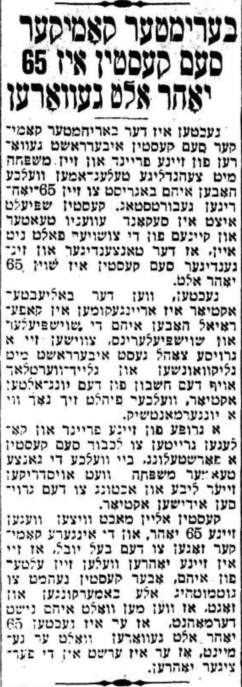
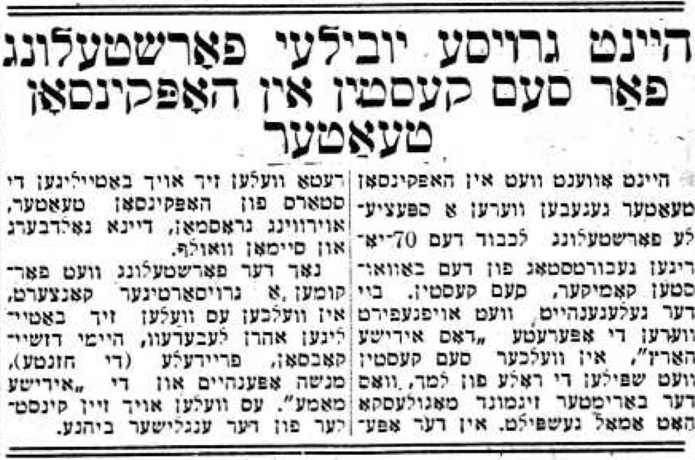
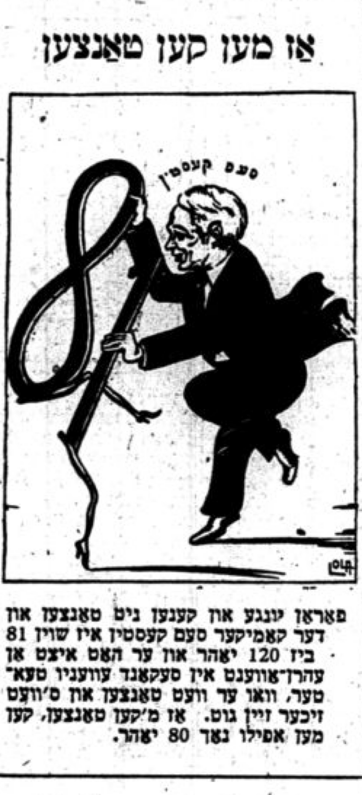

Birthday celebrations
Sam’s older birthdays were commemorated by the Yiddish theater community. It’s worth noting that Sam was most likely born on April 21st, 1869. If this is indeed his birthday, then none of the birthday celebrations actually occurred during the correct year… but such were birthdays in those days!
Translations of associated articles, and images of the articles themselves, are below.
50th birthday
Published in the Forverts on 1920-04-18
Sam Kestin turns 50 years old
It’s a funny thing to be a 50-year-old yid. His name is Shmuel Kestin, and people call him Sam. His colleagues shout at him, “Say, Sam!” And Sam, who turns 50 in a few days, not only replies, but runs in jumping on one foot like a mischevious kheder boy, giving himself a slap on each of his two cheeks, and there he is: The 50-year-old yid Sam.
Sam Kestin, the famous Yiddish comedian. The comedian who brings us joy and tickles our funny bone1. We laugh and have a good time. We laugh and feel in good health, because Sam Kestin is entertaining us.
In looking at such a jolly, lively, charming comedian, you’d never believe that this “party animal”2 was 50 years old. Even his children3 almost look older than him. He isn’t only young on the stage, but he is young in his cheerful soul too. He is indeed young in his appearance and in how he lives his simple life.
Kestin is one of those rare actors who actually discloses his age and doesn’t use 20-year-old photographs of himself in advertisements. The picture you see here of Kestin was only just taken, indeed right as he is about to turn 50. And this picture wasn’t taken with any makeup or massage, but just as Sam is.
Look at him - at his energy, at his fervor, at what a cheerful guy he is. He looks like a regular boychik. And yet, it’s Reb Shmuel Kestin, a 50-year-old yid whose daughter is already grown and herself an actress on the Yiddish stage.
Everyone loves Kestin. Not only does everyone love him when he is on stage and makes us believe that the whole world dances and sings and jumps just for us, but everyone also loves him in day-to-day life, because he is a good friend and a loving man - “a mentsh with a face of grace and with a soul of grace.”
And that’s the main thing about Kestin. He isn’t only a dancer and a jumper. His every dance and his every jump are done with a thousand graces. Deep in his soul glows a true mentshlikher4 spark with joy and love for everyone. In his grace there is a modesty, a sincerity, an affability that accompanies him on the stage just as much as in his life.

A comedian on the Yiddish stage is the only one who plays without any arrogance in melodramas. On the Yiddish stage, a comedian is also the same one who plays the court jester to the king in Shakespeare’s times. The comedian must reveal the bitter truth about the landlord, the boss, the lover, and the parvenu.
The comedian is the conscience of the Yiddish actors. Kestin isn’t only this way on the stage, but in real life as well. He is joyful when he walks along the streets of New York because he has a merry, pleasant soul. On top of his happiness, he has the good gifts of modesty, honesty, brotherhood, and a soul full of charm.
Sam Kestin - the comedian, the jumper - had a lot of serious troubles and tsures. Even now, he has sorrows just like all men have. As a mentsh with such a deep soul, he is almost moved to tears by the suffering of others. But Sam Kestin does not cry. Sam Kestin is no yidene5, as Teyve the Milkman used to say.
When Kestin appears in serious roles, such as Sholem Asch’s Undzer Gloybn, he performs with humor. Even when he’s in a serious role, you’ll want to laugh and enjoy yourself because just seeing Sam Kestin on the stage brings joys to the depths of your heart. His whole appearance, his charming little beard, with his charming voice, makes you feel so good that it restores your health. It’s a true delight to watch him perform as the father-in-law, simply because it’s Sam Kestin doing the performing.
He’s already performed for 28 years on the Yiddish stage, and maybe indeed for a whole 30…
He was born in Kyiv, Russia, and came to America as a young man. Here in American, he worked as a “shirt operator” in a shop, and he was drawn to the stage as though by a klipe6.
His mother herself opened a shirt shop and wanted Sam to be the shop manager, but he ran away to become an actor7. He suffered, starved, froze, and endured terrible tsures just to earn his piece of bread from acting.
But now, he is the famous Sam Kestin, the 50-years-young yid, and he is one of a few highly paid Yiddish actors.
When Kestin comes out in from of the audience, the whole stage is with him. It doesn’t matter what role he is playing. He is a character in and of himself. The charming actor Kestin is indeed a whole play unto himself, a 50-year-old play, as shiny and new as when it was first written.
His birthday is the 21st of April. He’ll be 50-years-old on that day. The Hebrew Actors' Union, where Sam is an active member who helps ensure that everyone is able to make a living from acting, will hold a yontif in honor of Kestin.
A huge banquet is being arranged to which all manner of actors and actresses are invited. People can give gifts to and compliments to Sam, who will sit calmly and reserved as befits a yid who, kinehora8, is turning 50 years old.
60th birthday
Published in the Forverts on 1930-04-04
Sam Kestin will be part of a performance for his 60th birthday party
A big head, white as milk. A face, clear and youthful. Eyes, impish and childlike. Even though he’s turning 60 years old, he has the look of a 16-year-old kid. He dances and jumps up, rising with the enthusiasm and agility of a young slapstick comedian. Whether he is on the stage or in in some kind of Romanian cellar, he is always ready to pull a mischievous trick or make a practical joke. He will never grow old. He really is one of those types - the sort who never gets old.
You know, of course, that we’re referring to no other than our dear Sam Kestin. He appeared in Ben Hador, in Yesties Mitsraïm, and in Goldfaden’s operettas. With the same passion as ever, he now sings and dances in Rumshinsky’s operettas. He has performed with Adler, Kessler, and Mogulesko. He has also performed with Aaron Lebedeff, Leon Blank, Ludwiz Satz, and Molly Picon.9
Those who saw him perform some 30 years ago will swear to you on their life that he is still the same Kestin, with the same youthful energy as before.
Kestin has performed on the Yiddish stage for 44 years. He was 16 years old when he arrived in America, and he worked in his mother’s “shirt factory” before he become an actor. This was in Philadelphia. The first performance he appeared in was in the Dramatic Hall, which was located at 5th and Gaskill Sts. Now that theater is a Hungarian shul. He began his career in theater acting with Boris Thomashevsky. His first role was as a young boy who sang “Heyse bobkelakh”10 in Goldfaden’s Di Kishefmacherin11.
No, Kestin didn’t regret leaving his mother’s factory to become an actor. He would probably now be a respected businessman. Had he stayed with his mother, he would certainly be wealthier than he is now. But he would not have had the interesting life of a stage artist. He would not have experienced all the ups and downs, the successes and failures, the struggles and the praises - all the bitter and sweet moments that make an actor’s life so fascinating and interesting.
And Kestin’s career was certainly a lucky one. He experienced fewer disappointments and fewer heartbreaks compared to other actors. He was always beloved by the audiences, by the theater managers, and by his colleagues - not only as an artist, but also as a friend and good brother. People speak of him with a heartful smile. He is the beloved scamp with the white head of hair.
Just mention Der Griner Milyoner, out emerges “Zalman the shodchan”. Di Nekste-Dorige12 - and right away you see the operator, the Litvak. Today, the little father-in-law in Asch’s Undzer Gloybn and tens of other roles that Kestin has brought to life with his own charm and “Kestin-ish” ease. It’s not for nothing that the audience sits in the Second Avenue Theater so quietly when Kestin and Madame Regina Prager sing the song that Joseph Rumshinsky wrote for them: “Di alte gute tsaytn”13. In this song, they sing old nigunim, old arrangements from their times when the Yiddish theater was young, when the older generation still stood at the edge of their careers.
At 8 o’clock Sunday evening, the 12th of April, there will be performance of Di Komediantke in the Second Avenue Theater to kick off a 60-year birthday celebration in honor of Kestin. At the performance, Kestin will be given a test - is he really becoming of his six decades? His friends are very afraid that he won’t pass the test. So mischievous, so childlike is Kestin that he really should keep up appearances as is befitting of a young man who is nearly 60.
But Kestin can also perform in serious roles. And if it is absolutely necessary, he will put on the role of a 60-year old yid at the party - stately, respectable, serious.
The party was arranged by the Hebrew Actors' Union. Between the acts, the following will speak to celebrate Sam: Reuben Guskin, the Manager of the union; Jean Greenfield, Acting President; Abe Sincoff, President of the Theatrical Alliance; Jacob Kalich, Director of the Second Avenue Theater; and others.
After the performance there will be an intimate banquet for Kestin with a small number of friends. At the banquet, they’ll live it up as is befitting of a 60th birthday celebration.

65th birthday
Published in Der Morgen Zshurnal on 1935-04-22
Famous comedian Sam Kestin turns 65
Yesterday the famous comedian Sam Kestin was surprised by his friends and family with tens of telegrams wishing him a happy 65th birthday. Kestin is now playing in the Second Avenue Theater, and it’s difficult for anyone to believe that he’s really 65 years old.
Yesterday, when the beloved actor came around Cafe Royal, a great number of actors and actresses surprised the “young-old” actor, who felt just like a yongermentshik14, with well wishes in honor of his birthday.
A group of his friends and colleagues organized a performance in Sam Kestin’s honor. Through this performance, the whole theater family will express their love and esteem for the great Yiddish actor.
Kestin himself jokes about his 65 years. The younger comedians tell Sam that they feel older than him, but he takes it all in good fun and says, if they hadn’t reminded him that he had turned 65 yesterday, he would have thought he was only in his forties.

70th birthday
Published in the Forverts on 1940-03-22
A grand birthday jubilee performance today for Sam Kestin in Hopkinson Theater
This evening in the Hopkinson Theater, there will be a special performance in honor of the 70th birthday of the well-known comedian Sam Kestin. The performance will be of Dos Yiddishe Herz15, and Sam will play the role of Lamech, which the famous comedian Sigmond Mogulesko had once played. The stars of the Hopkinson Theater will also appear in the play, including Irving Grossman, Dana Goldberg16, and Simon Wolf.
After the performance, there will be a huge concert where Aaron Lebedeff, Hymie Jacobson, Fraydele (the khazante), Menashe Oppenheim and the “Yiddishe mama”17. There will also be artists from the English stage.

80th birthday
Published in Der Tog on 1947-06-05
Sam Kestin, long-time comedian in the Yiddish Theater, celebrates his 80th birthday
A yontif for the Yiddish theater-profession in America - The birthday celebrant was a close friend of the famous artist Sigmond Mogulesko. - Sam Kestin has performed for 60 years on the Yiddish stage in New York.
The Yiddish theater world is now celebrating one of the most wonderful of holidays - Sam Kestin, the “littlest pinky finger” of our Yiddish theater, is, with mazl, turning 80 years old.
More than 70 years have already passed since Goldfaden laid the foundation stone of the Yiddish theater in the Romanian city of Iasi. And you could say that Sam Kestin was one of the pioneers who started out in the kheyder of Abraham Goldfaden. Each era of the Yiddish theater is clearly reflected in the manuscripts and in the plays, and also in the actors, of those times.
It’s enough to be familiar with the theater of a certain era to have a comprehensive understanding of the performing arts, the talent, and the taste of the audiences of those days. You can also understand the perspectives people held, and the ideals and ambitions that most of the great artists had. You can also clearly see the striking differences among diverse social classes and their attitudes towards the Yiddish theater.
Just like life, performing arts don’t stay forever in one place, but slowly evolve, soon adopting new shapes and styles. The new young generation always brings new, talented performers who infuse the performing arts with their new beliefs and their new ideas.
And in the end, the young performers emerge victorious, and the older ones must, just as in life, cede their place to the young new talent.
An exception, however, who always catches your eye and keeps your full attention, is the “old-young” comedian Sam Kestin, whose 80th birthday will be celebrated the evening of Saturday June 7th in the Clinton Theater. He truly deserves for people to come marvel at his great artistry and his popularity among the Jewish masses.
Sam Kestin, who imbibed the “Oral Torah” from the great comedian Sigmond Mogulesko, is still going strong18. After 60-some years performing Yiddish theater, he still won’t stop. Today, he says, he still plays the same roles as he used to play in the old days. And just like a stubborn general on the battlefield, he fights with all his might and clings to his strategy.
Among the great stars who have adorned the stage of the American Yiddish theater over the decades, the name Sam Kestin shines and glimmers “with a thousand graces.” And even though Sam Kestin went through all seven levels of hell and endured all kinds of troubles and tsures and trials over his long career on the Yiddish stage, his sparkle never diminished and his light never faded. He therefore deserves all the respect and honor that we can show him.
Sam Kestin is a performer who even today possesses everything an artist needs. His exaggerated comedic style is reminiscent of the great late actor Sigmond Mogulesko, and just like Mogulesko, Sam Kestin has of all the characteristics and idiosyncracies of a stage artist. The Yiddish tune and the khasidisher nigun19, the Jewish joke and the Jewish witticism, the Jewish humor and the “mitzvah dance”, and even the Jewish kvetching in all its forms - Sam Kestin embodies, just as Sigmond Mogulesko did, all these treasures of Yiddish “folksiness” which were tightly intertwined with the Yiddish stage of old. It’s so delicate that it’s hard to put into words. You can only fully appreciate it when you see Sam Kestin perform on stage.
Sam Kestin’s laughter was never fake or manufactured, because his comedy, just like Mogulesko’s, was always an original one, a sincere one, a pure one, an honest one. And just as his entire being bursts with fieriness and youth, so too does his talent. If you want to be reminded of, or even just get a sense of, what it was like to see the famous great late actor Sigmond Mogulesko perform, you have to go see Sam Kestin.
Sam Kestin, who is celebrating his 80th birthday in the Clinton Theater, began his career over 60 years ago in Singer Hall on Pitkin Avenue, where he excelled performing in all the roles that Mogulesko used to perform in those days in the Windsor, Thalia, and also in the People’s Theaters. And just like Mogulesko always performed with Rudolph Marks, Sam Kestin would always perform with the late artist Jacob Frank. Just like Mogulesko and Marks, both Kestin and Frank always looked alike. You could never tell between them who was the real Kuni-Lemel and who is the fake Kuni-Lemel20.
For his 80th birthday jubilee, Sam Kestin has chosen to perform one of Abraham Goldfaden’s first plays, Kaptsnzon et Hungerman. All of his friends and admirers wish him long life and that the Jewish world will enjoy his talent for many years to come.

81st birthday
Published in the “Second Section” of the Forverts on 1948-03-21
If you can dance
Illustrated by Lola (Leon Israel)
There are young people who can’t dance, and the comedian Sam Kestin is already 81, until 120, and there will be an event honoring him in Second Avenue Theater, where he will dance and it’s sure to be good. If you can dance, you can still dance even after 80 years.

Footnotes
The Yiddish idiom used here is “tickles our laugh-machine.”↩︎
הוליאעק↩︎
In 1920, his children were around 26, 22, and 18 years old.↩︎
“mentsh-ish”↩︎
(older) Jewish woman↩︎
I believe this is referring to this Kabbalistic term for an evil spirit↩︎
This does not mesh very well with Sam’s memoirs, so who knows!↩︎
Literally means “no evil eye,” this phrase is used to ward off the evil eye when saying something good or complimentary↩︎
This paragraph showcasing Sam’s background tracks the history of the Yiddish theater. From the early plays [Horowitz shund (low-brow, unsophisticated “trash”) plays and actors like Adler], to the more modern plays (Rumshinsky operettas and actors like Lebedeff).↩︎
hot buns↩︎
The Sorceress↩︎
“The Lady Next Door”, a play by Leon Kobrin↩︎
“The good old times”↩︎
young man↩︎
Sheet music for two songs from this play: “Dos Yiddishe herz” and “Oi is dos a mame”↩︎
possibly Diana Goldberg?↩︎
A character?↩︎
The real translation here is “goes with the flow”↩︎
chasidic melody↩︎
Reference to “The Two Kuni-Lemels”↩︎